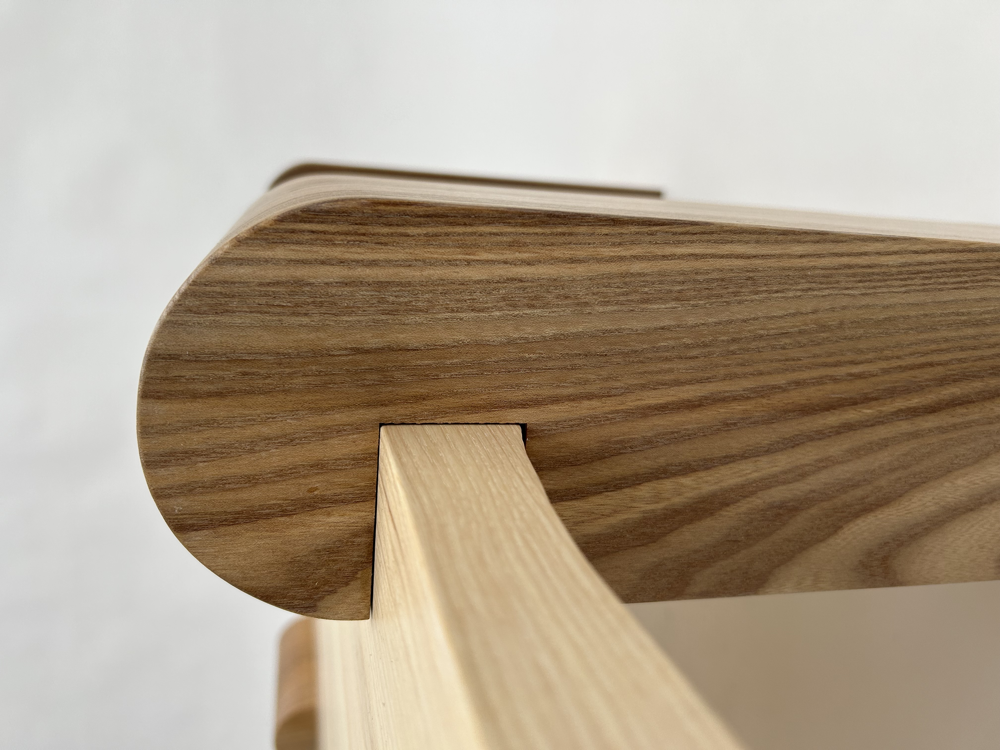

THE TABLE
Barker: Barker is a project inspired by the Swedish forest and nature made during my studies at Jönköping University at Träcentrum.

The project aims to promote biodiversity in
Swedish forests and diversify the use of wood species within the furniture industry. The
table’s design combines different wood species, showcasing their distinct characteristics and
highlighting the beauty and versatility of Swedish forests.
The coffee Barker features rounded legs crafted of solid Elm, embracing the tabletop
in light ash. The legs supporting the tabletop illustrate the significance of domestic
wood species in the Swedish forest. Just as the table loses its function without the
legs, the forest also loses its vital ecosystem services when lacking diversity.
The narrow strip of Elm on the tabletop symbolizes the low percentage of deciduous
trees in Swedish forests, in contrast to the prevailing presence of Spruce and Pine.
The undersurface of the table has a wavy, smooth texture inspired by the bark of
trees, hence the product's name.


